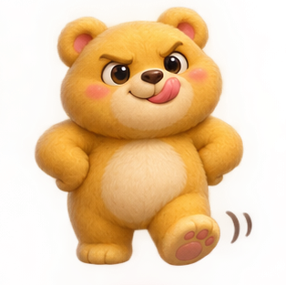
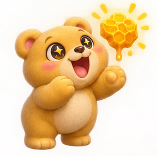
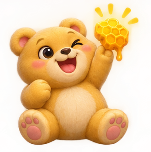

A simple method
for efficient AI model fine-tuning
EvoWeights.
(R-)Evolutionary Weight-Space Fine-Tuning
EvoWeights combines AI-engineered weight-space programming with evolutionary
weight-space fine-tuning of quantized model weights. Define a measurable goal. A frontier AI model
helps prepare the model and it's task interface using weight-space programming, and evaluation criteria. EvoWeights then searches for
better weight configurations through mutation and selection, without further LLM calls.
In this experiment, it adapts NVIDIA Kumo-Tabular Small by evolving
selected output weights and sensor-controller weights while keeping the transformer backbone
frozen. Candidates compete through simulated gameplay; new revisions are retained only after
passing fresh-seed validation and lineage checks.
No backpropagation or GPU is required for browser training.
The model uses 96 labelled examples as context; simulated gameplay supplies the optimization
feedback.
Watch a 27M-parameter model adapt to a DOOM arena, live on your CPU.
Aron Homberg is an independent AI researcher, formally trained Computer Science Expert (C.S.E.), and software engineer with over 20 years of professional experience. He created EvoWeights, an evolutionary method for direct neural network weight optimization without backpropagation.
His research focuses on small, quantized, and on-device AI models, evolutionary optimization, fine-tuning without backpropagation, efficient inference engines, and agentic AI systems.
His technical interests and expertise span custom embedding and reranking models, hybrid and vector search (including late interaction), image similarity search, knowledge graphs and graph-based retrieval, speech recognition (ASR) and synthesis (TTS), multimodal image and video understanding and generation, and high-performance, cross-platform AI inference.
He actively develops open-source AI systems, with particular emphasis on efficient CPU and browser-based execution, and welcomes international research collaborations and professional consulting engagements.
Every model sits under the parent it was trained or edited
from. ★ marks the parent of the next training run, ▶ the model in play. Models trained in
this browser appear here and stay stored only in this browser.
Loading
…
Model
Rank
Performance
Parent
Δ Parameters
Actions
PureDOOM runs locally with new meadow and bear artwork, honey and hug mechanics. The engine retains internal action names for model compatibility. Archived DOOM and native ViZDoom results below describe the earlier task and are not HuggingDOOM scores.

03 Architecture
Understanding the Weight-Space Edited Architecture
TWO PATHS · ONE ACTION
Original Kumo vs. the model after Weight-Space Programming
Sensor weights · 119
valuesWeigh sensors into action scoresEvery decision, each action gets
score = scale × Σ (weight × sensor) from the current sensor
values; the weights stay fixed during play.
The pretrained backbone stays frozen; selected weights in its output head are
evolved. A mutation only nudges weights at the
very end: the three output rows that decide LEFT, RIGHT or FIRE, and 119 small extra weights that
read named game sensors. Everything before that, including all 12 transformer layers, is never
touched.
Where each step changes the model
InputGame state14 numbers: enemy bands,
ammo, health, last action
Output rowsLEFT · RIGHT · FIRE3 ×
1,024 weights of the model’s own final layerAstra 6
selected rows 0, 1 and 2 of 10, labeled them LEFT, RIGHT and FIRE, and edited 256
weights in FIRE via Weight-Space Programming
+
Sensor weights3 small extra
matrices119 weights on named game sensors, added to the action
scoresAstra 6 added them directly via Weight-Space
Programming
OutputAction17.5 times per game second the
highest of the three scores wins: LEFT or RIGHT turns the player, FIRE shoots or
punches. The sensor weights can add a step forward or back, e.g. to close in for a punch
and retreat.
One mutation moves about half of 167 blocks by ±2 levels: 48 blocks of 64
output-row weights and the 119 sensor weights, one block each. The browser lineage started
without Astra 6’s game optimization Weight Space Programming edit but kept Astra 6’s
sensor-weight matrices and sensors, with every sensor weight at zero. The row meanings were
assigned, not found in the model: LEFT = 0, RIGHT = 1, FIRE = 2, conditioned by 96 labelled
examples.
05 Statistics
One game proves nothing
PAIRED t ≥ 2
Two games on the same seed drift apart once one action differs, so a single game
mostly measures luck. EvoWeights therefore keeps a new model generation only when it passes
statistical selection checks: the child and its parent play the same fresh seeds in pairs, and
the child is kept only when the average difference lies at least two standard errors above zero
(paired t ≥ 2).

One paired gameRunning averageAverage ±2 standard errorsLarge lossZero = no improvement
Each dot compares EvoWeights Terminator with Astra 6’s model in the DOOM arena.
At game 24, the band includes zero. The average is still positive, but its
lower uncertainty limit is below zero, so the gain no longer clears t ≥ 2.
The band describes uncertainty in the average, not the spread of individual games.
PairParent and candidate are compared on identical starting seeds.
MeasureIn batches of 16 seeds, up to 64: the paired t of the primary metric,
survival or hugs.
Stop or accept earlyt ≤ -1 stops the check; t ≥ 3 after 32 seeds accepts the child
at once.
KeepOtherwise the child needs t ≥ 2 and a positive utility gain, and must match
every ancestor of its line on the same seeds.
These checks provide evidence for selection; they do not guarantee that every
retained revision improves true expected performance or preserves the secondary metric.
06 Results
CPU evolution outperforms the tested Astra 6 and Opus 5.5 weight edits
in this DOOM arena
EvoWeights vs. Frontier AI Models
Across 48 held-out games per model, EvoWeights Terminator averaged more kills,
and EvoWeights Survivor averaged longer survival, than either tested frontier-model direct edit.
Terminator achieved 33.3 kills per game, versus 27.5 for Astra 6 and 27.4 for
Opus 5.5. Survivor averaged 131.4 seconds of survival, versus 40.6 and 50.9 seconds respectively,
with fewer kills.
These comparisons evaluate the resulting policies on their target metrics.
The displayed percentage changes and paired t-statistics use Astra 6 as the reference.
Mean over 48 held-out 10-minute games
Astra 6 Weight-Space
Programmingparent: Original FP3240.6 s ·
baseline
Opus 5.5 Weight-Space
Programmingparent: 4-bit base + Astra 6’s sensors, all sensor weights
050.9 s · +25.4 % (t 0.8)
EvoWeights Terminatorparent:
4-bit base + Astra 6’s sensors, all sensor weights 048.5 s
· +19.5 % (t 2.7)
EvoWeights Survivorparent:
4-bit base + Astra 6’s sensors, all sensor weights 0131.4
s · +223.5 % (t 3.6)
Mean over the same games
Astra 6 Weight-Space
Programmingparent: Original FP3227.5 · baseline
Opus 5.5 Weight-Space
Programmingparent: 4-bit base + Astra 6’s sensors, all sensor weights
027.4 · -0.2 % (t -0.0)
EvoWeights
Terminatorparent: 4-bit base + Astra 6’s sensors, all sensor weights
033.3 · +21.2 % (t 4.8)
EvoWeights Survivorparent: 4-bit
base + Astra 6’s sensors, all sensor weights 024.6 ·
-10.5 % (t -3.1)
Wall time, lower is better
Astra 6 Weight-Space
Programmingparent: Original FP3216 min 59 s
Opus 5.5 Weight-Space
Programmingparent: 4-bit base + Astra 6’s sensors, all sensor weights
027 min 44 s
EvoWeights
Terminatorparent: 4-bit base + Astra 6’s sensors, all sensor weights
010 min 47 s
EvoWeights Survivorparent: 4-bit
base + Astra 6’s sensors, all sensor weights 024 min 10
s
Agentic weight-space programming EvoWeights, trained in the browser
07 Ablation
How much do the evolved policies depend on Kumo’s output scores?
48 FRESH GAMES
We evaluated each evolved policy on the same 48 fresh seeds with Kumo’s three
action scores enabled and then set to zero, leaving the sensor controller unchanged. Removing
those scores substantially reduced both survival and kills.
EvoWeights Survivor
Survival per game
121.0 s
23.7 s
-80
%
Kills per game
24.8
12.5
-50
%
43 of 48 games shorter with Kumo scores zeroed · paired t -4.9 (survival), -12.1
(kills)
EvoWeights Terminator
Survival per game
49.2 s
12.9 s
-74
%
Kills per game
34.1
7.1
-79
%
48 of 48 games shorter with Kumo scores zeroed · paired t -13.4 (survival), -20.7
(kills)
Kumo scores enabled Kumo scores
zeroed
This demonstrates that the evolved policies depend on Kumo’s contribution. It does
not isolate the benefit of the output-weight mutations; that requires a separate comparison
restoring the original output weights while retaining the evolved controller.
Repeated for every group: the score lost without it and gained with it is its
effect. Bold results stand out from seed noise (|t| ≥ 2).
Which mutation changes have effects?
08 Running the model
From Game State To Action
17.5 DECISIONS PER GAME SECOND
Every decision runs the same loop, 17.5 times per game second:
MeasureThe game state gives 14 numbers for the transformer and 25 sensor values for
the controller.
Forward passThe 14 numbers run through the frozen transformer against the 96 cached
examples; head rows 0–2 give the LEFT, RIGHT and FIRE scores.
WeighEach sensor-weight matrix multiplies its sensors by its fixed weights:
scale × Σ (weight × sensor), one score per action.
DecideLEFT, RIGHT and FIRE add both scores; HOLD, BACKWARD and FORWARD have only
their sensor-weight score. The highest action wins, and the game advances two tics. Then the
loop starts again.
How sensor weights work. Each weight is a signed 4-bit integer (-7 …
+7) stored in the model file, with one scale per action. Astra 6 wrote them once, the neutral base
sets them all to 0, and evolution mutates them only between generations; during a game they never
change. At every decision, 17.5 times per game second, the code measures the sensors again and each
action gets the score scale × Σ (weight × sensor). The aim scores are added to the
transformer’s LEFT, RIGHT and FIRE scores; the combat matrix then adds its own (only when it has a
target: a punchable enemy, a remembered attacker or a damage scan), and the facing guard can shift
the choice between stepping back and forward. In the aim and combat matrices one sensor is the
constant 1, so 10 of the 119 weights act as fixed biases.
an enemy in view is turned toward the player, there is room behind, and the
player is not mid-punch
Each sensor is computed by code from the game state at every decision. The weight count of a
matrix is its actions × its sensors.

09 Weight explorer
Explore Actual Model Weights
Pick a Base and a model to Compare. Each tile holds 64 output weights; select
one to see its value in both models. “Extra weights added” shows the sensor weights.
Default: the model with the highest total
against Astra 6 Weight-Space Programming. The release comparison shows the built-in FIRE edit.
Loading the model comparison…
10 Fine-tuning in-browser on CPU
Performance Benchmark
Optimizing a small model using EvoWeights needs no GPU. EvoWeights judges
every candidate by playing games, so it needs only forward passes on the CPU cores that also run the
game. No backpropagation is required. The optional evidence-based mode uses perturbation-derived
gradient estimates. Each logical CPU core runs its own WASM engine
and 4-bit model. A run replays bit for bit on any number of cores, so more cores only shorten the
wait.
Model (name in the tree)
Scenario (start · runs · metric)
Hardware (Apple M5 Max)
Wall time (mins)
Games (sum)
Decisions (million)
EvoWeights Introvertor · R3
Four browser runs from sensor weights set to zero, survival metric (one hugs
run without a child included)
VS Code browser (Chrome 150), 18 CPU cores
24.2
7,179
4.18
EvoWeights Hugginator · R4 · Hugs
Four browser runs from sensor weights set to zero, hugs metric
VS Code browser (Chrome 150), 18 CPU cores
10.8
3,926
1.98
Browser test child · final round
“Start Evolution” → stop → final round, from the 4-bit base, in an automated
test
Chrome, 8 CPU cores
2.9
–
–
No benchmark on this machine yet. Press Run Benchmark to time the
model here.
Model
Actual backend
p50 median model time per decision
p95 95th percentile per decision
Actions matched
11 Beyond research
Use Cases Outside Research
FUTURE RESEARCH
If a small model runs on a device and its goal can be measured and tried out
safely, the device itself could adapt the model: no data center, no backpropagation, and the data stays
local. Each example names what would mutate, what defines survival and what must not get worse.
Personalized AI models
Other uses
A language model that writes like its user
Mutate The output rows or a small adapter of an on-device language model, in their
stored 4-bit format.
Survival How often the user keeps a suggestion unedited, on fresh drafts.
Must not get worse Factual accuracy and safety answers on a frozen reference set may
not drop.
A model of what one person prefers
Mutate The scoring rows of a small preference model on top of a frozen language or
vision backbone.
Survival Agreement with the user’s own choices on items the search has not seen.
Must not get worse Safety filters and a shared reference set stay within an agreed
band.
A speech model that understands its user better
Mutate The output layer of a small on-device speech recognition model, adapting to one
voice, accent and vocabulary.
Survival Word error rate on the user’s own corrected transcripts.
Must not get worse Word error rate on other speakers’ reference recordings stays
within a band.
A vision model adapted to one clinic’s images
Mutate The decision rows on top of a frozen vision encoder, for the clinic’s devices
and patients.
Survival Agreement with clinician-confirmed findings on fresh cases.
Must not get worse Sensitivity for critical findings may not fall; every decision
stays under clinician review.
Tune an NPC to a design goal
Mutate A game agent’s sensor weights and stored head parameters, as in the DOOM
experiment.
Survival The designer’s plain-language goal, written as a metric, on fresh levels and
seeds.
Must not get worse A second goal, such as hugs under a survival goal, may not drop by
two standard errors.
Fine-tune where the model already runs
Mutate Stored 4-bit levels of a deployed language, vision or audio model, in the
deployed format, on the device’s own CPU.
Survival The task metric on fresh inputs from the device.
Must not get worse Held-out reference inputs; every step stays revertible.
Small decision weights on a frozen backbone
Mutate The small matrices that turn a frozen language, vision or audio backbone’s
features into decisions, as EvoWeights did with Astra 6’s sensor weights.
Survival The decision quality the task defines.
Must not get worse Safety-relevant behavior measured separately, for example
collisions, damage taken or refusals.
A tiny expert model instead of long rule code
Mutate The output rows of a small tabular model that takes the place of long, nested
if/else and switch/case rules, seeded with examples of the decisions those rules make.
Survival Agreement with expert-confirmed decisions on fresh cases, or the business
metric the rules were written for.
Must not get worse Known reference cases may not change their decision without review;
every kept change ships as a reviewable diff.
Raise one metric, hold another
Mutate The classification rows of a small language-model spam filter.
Survival Catch rate on fresh mail.
Must not get worse False positives, with a hard limit.
Tune a control model where the simulator is the metric
Mutate The action rows on top of a frozen vision encoder that sees the scene.
Survival Task success in simulation on shared seeds, CPU cores in parallel.
Must not get worse Transfer checks on held-out scenarios before any hardware run.
Ship a change as a reviewable diff
Mutate Any of the above: each kept child is its parent plus a short list of moved
weights.
Survival The validated metric, recorded in the child’s receipt.
Must not get worse Rollback to the parent fingerprint; the receipt replays bit for
bit.
FUTURE RESEARCH NEEDED. Only the DOOM player is measured here. Whether
EvoWeights generalizes, and whether it works with other model backbones such as language models,
vision encoders or speech models, is still unknown and requires further research. Each use needs its
own metric, control and held-out test, and gains are bounded by what the mutable weights can
express.